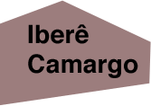
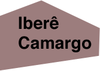

Fundação Iberê Camargo
 


Iberê Camargo nasceu em Restinga Seca, no Rio Grande do Sul, em 1914. Seus pais trabalhavam na estação de trem da cidade. Quando era criança, Iberê também morou em outras cidades do interior gaúcho, como Jaguari e Santa Maria.
Com 20 anos, Iberê se mudou para Porto Alegre, para estudar desenho no Instituto de Belas-Artes. Em 1942, Iberê se transferiu para o Rio de Janeiro, para continuar seus estudos em arte. Lá, conheceu importantes artistas e foi aluno do pintor Alberto Veiga Guignard. Nessa época, Iberê gostava de pintar as ruas da cidade.
Em 1947, uma dessas pinturas foi premiada em um concurso artístico com uma viagem à Europa. Iberê viveu na Itália e na França por dois anos, onde visitou museus e teve aula com grandes artistas, como Giorgio de Chirico e André Lhote.
De volta ao Rio de Janeiro, Iberê ainda pintava as paisagens da cidade. Mais tarde, por causa de problemas na coluna, precisou trabalhar mais tempo dentro do seu ateliê. Foi nessa época, no final dos anos 1950, que o carretel apareceu em suas obras. Em suas pinturas, esse pequeno objeto se transformou em ampulhetas, dados e manchas.
Iberê voltou para Porto Alegre em 1982. Nessa época, gostava de observar os ciclistas no Parque da Redenção e os manequins nas vitrines da Rua da Praia para construir os personagens de suas obras. Além de produzir muitas pinturas, desenhos e gravuras, Iberê escreveu contos, memórias e um manual de gravura.